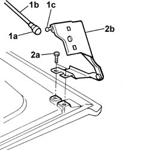
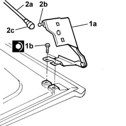

7030F14 joints of flap on load compartment roof - r+r
- Path
- Procedures > 70 FITTINGS > 7030 SUN ROOF AND HOOD > 7030F flap on load compartment roof > 7030F14 joints of flap on load compartment roof - r+r
- Kind
- repair procedure (removal / refitting; the operation number is the code)
- Applies to
- all engines; all production periods
- Interactive page
- https://sloeber94.github.io/elrnDB-fDbl/en/#/2585110
Applies to: all engines; all production periods
 Removing
Removing
 Refitting
RefittingOp. 7040H80 REAR PARCEL SHELF - R.R.
Op. 7210L92 R.R. OPENING FLAP IN LOAD COMPARTMENT ROOF
1. Lift up the safety lever (1a) and disconnect the telescopic strut (1b) from the head (1c), joint side.
2. Undo the fixing bolts (2),deflector side and remove the joint (2b).
Carry out the same operation on the remaining joint.

Applies to: all engines; all production periods
Refitting
Removing1. Position the joint (1a) and tighten the fixing bolts (1b) to torque.
2. Fit the telescopic strut (2a) on the head (2b) and close the safety lever (2c).

Applies to: all engines; all production periods